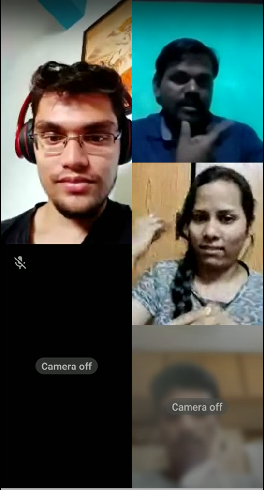
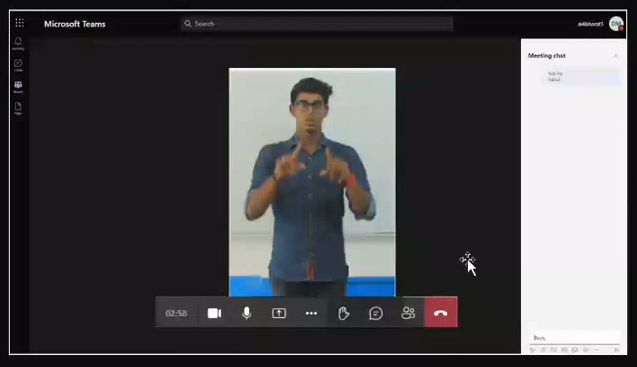
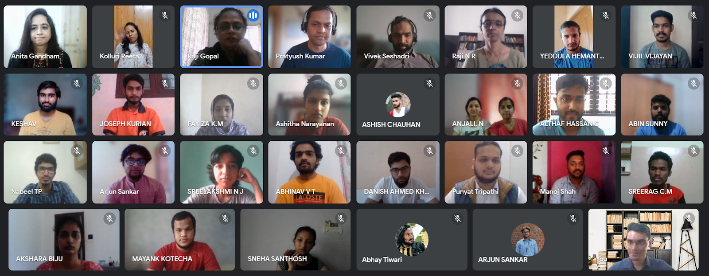
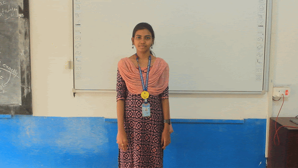
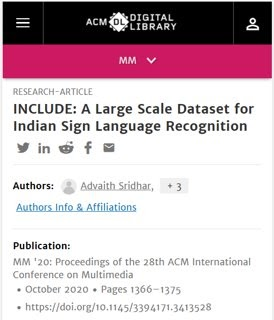

I lead the Accessibility division at AI4Bharat, where we work on auto-translating Indian Sign Language (ISL) to English
I am the Project Lead for the ASSIST project. We are recipients of Microsoft's AI For Accessibility Grant 2021, and do the following things:
- Conduct qualitative studies on the challenges faced by the Indian Deaf population
- Create open-source libraries for sign language recognition OpenHands
- Launch educational courses that upskill Deaf students while simultaneously collecting data for ML research
- Integrate our Machine Learning models with Microsoft Teams
Read more about our work here
Qualitative User Research Study

We conducted 15 45-minute interviews with Deaf participants, and circulated a form that got 132 responses from employed members of the Deaf community. Through the above, we ascertain the various challenges faced by them on a day-to-day basis, and evaluate the current state of technology, as well as how accessible technology can be built for them. The paper is currently in pre-print, and can be read here
Integration with Microsoft Teams

My team and I carried out a proof-of-concept demo of our sign language recognition models on Microsoft Teams, in collaboration with Microsoft. Our models were successfully able to detect if a meeting participant was signing, and recognise the sign.
Data Collection

My goal was to collect data for ASSIST in a manner that also gave back to the Deaf community. Thus, we launched a course on Workplace English communication - a topic of much interest for graduating students. We collected 4,200 videos across 170 classes for our dataset, while also preparing 23 students in workplace English
Project INCLUDE
Dataset

INCLUDE is India’s first Isolated Sign Language Video dataset. The dataset consists of over 4000 videos recorded by me at a Deaf school near IIT-Madras. The principal of the school enjoyed my involvement so much that he even made the Chief Guest of the batch’s graduating ceremony! Dataset Link
Model training

We established a benchmark accuracy of 85.6% on the INCLUDE dataset, and 94.5% on INCLUDE-50, a 50 class subset of INCLUDE. Due to the low number of videos per class, we used a pretrained pose detection model (OpenPose) for feature extraction, followed by a pre-trained pipeline of MobileNet as an encoder and a BiLSTM decoder. Published in ACMMM2020 Paper Link